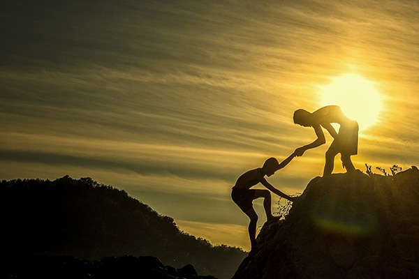
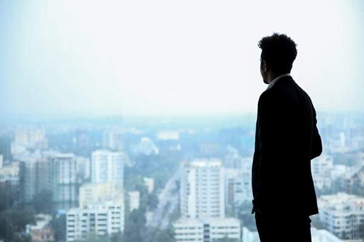

경영이념&비전
새로운 창조를 위한 변화와 도전
행복에너지 대성의 미래를 만들어가는 힘이 되겠습니다.
-

경영이념
우리는 과학발전과 신기술 개발의 선두에 서서 인화와 인재육성의 바탕 위에 공정하고 합리적인 기업경영을 통하여 고객과 주주, 그리고 대성 사원 전체의 복지를 구현하며 전문성, 공익성과 수익성에 있어서 세계적인 초일류 우량기업으로서 우리에게 주어진 기업의 사회적 책임을 완수 할 것입니다.
-

비전
지난 반세기 동안 우리나라의 에너지 역사를 선도해 온 대성은 2001년 7월 제2창업을 선언하고 제2의 도약을 준비하고 있습니다. 그룹의 주력인 에너지(Energy)사업을 주축으로 환경과 건설, 열병합발전 사업 분야로 사업을 확대하여 첨단기술의 노하우 축적을 통한 경쟁력 확보를 목표로 하고 있습니다. 대성은 과학발전과 신기술 개발을 최우선 과제로 삼는 경영철학에 기초해 ‘기술경영’을 펼쳐나감으로써 인류의 보다 풍요로운 삶을 위해 노력할 것을 고객 여러분께 약속 드립니다.
경영방침
새로운 변화의 시대에 새로운 창조를 위한 변화와 도전이라는 대성의 경영이념은 창사이래 한결같이 추구해 온 대성의 정신으로, 과학기술과 신기술 개발을 바탕으로 거듭나고자 CEO의 경영철학과 의지를 구체화해 1993년 1월 1일 재정립한 것입니다.
-
경제적책임경영
Management of Economic Responsibility수익성 있는 사업의 다양한 전개 고객의 니즈를 충족하는 제품 및 기술개발 기업의 경제적 효율성 강화 주주 권익을 위한 기업가치향상
-
국제적책임경영
Management of Inernational Responsibility기업 환경의 세계화에 대한 적극대응과 국가간 경제협력 신뢰 구축 국제적 전문 인력의 양성